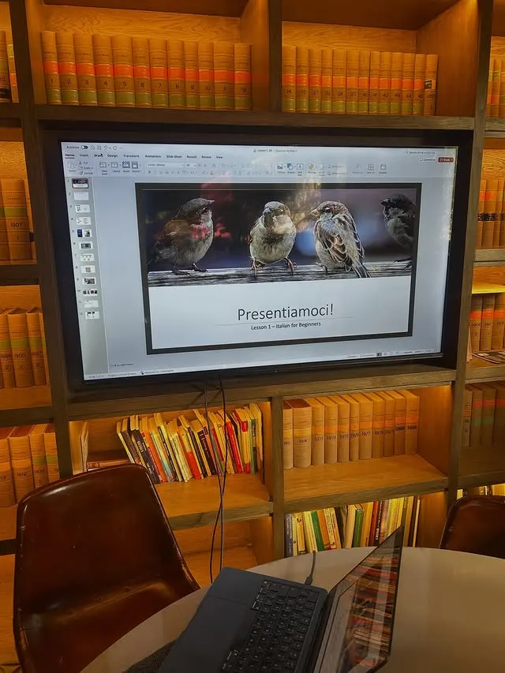
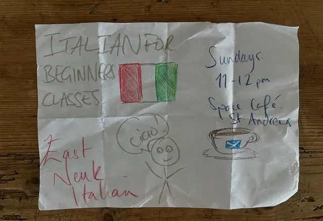
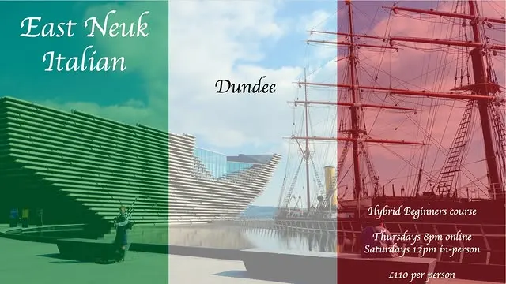
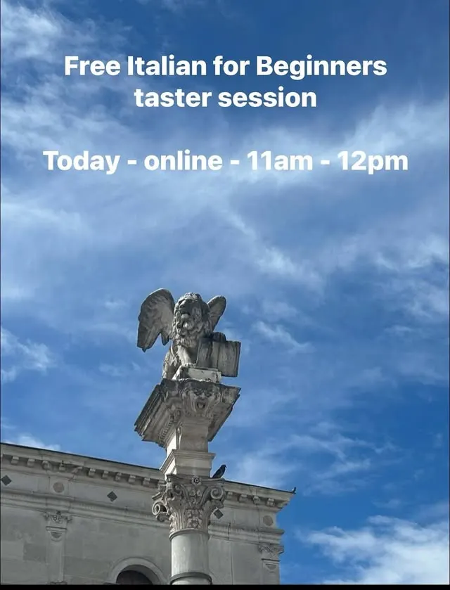

In-person Italian · East Neuk, St Andrews & Dundee
Learn Italian over coffee, in real life.
East Neuk Italian runs Italian classes in cafés and community venues — beginners and intermediate groups, plus conversation cafés for anyone who just wants to chat in Italian.
No previous experience is needed to start. Come to a free taster, take a seat at the table, and see if it’s for you.
Photos on this page are the school’s own Instagram posts, used as a preview concept.

Classes
What the school currently offers, exactly as posted on its Instagram:
Italian for Beginners
Sunday classes at Space café, St Andrews, 11am–12pm, as advertised for the autumn term. No previous experience of Italian required — the free taster is the way in.
Intermediate
An intermediate group also meets on Sunday mornings at Space café — recent lessons have covered the congiuntivo (subjunctive).
Conversation cafés
For anyone who wants to swing by for a chat in Italian, without committing to a course. The school has said it is organising more conversation cafés — ask on Instagram for the next one.

Where we meet
Classes are held in person at venues the school has named in its posts. No addresses are listed here — ask on Instagram for directions to your nearest group.
Space café, St Andrews
Home of the Sunday beginners and intermediate classes, 11am–12pm.
East Neuk Centre, Anstruther
An East Neuk venue for the school’s courses, as listed by the school.
Dundee
Home of the Hybrid Beginners course — online weekday evenings plus in-person Saturdays, as shown in the school’s Dundee graphic below.

Prices
£100 – £110
Course prices as published by the school fall in this range. The exact price depends on the course — the Dundee Hybrid Beginners course is shown at £110 in the school’s own graphic above.
For the current price of the course you want, message the school on Instagram — course details and prices currently live only in its post captions, which is exactly the problem a proper website would fix.
Free taster session
Free Italian for Beginners taster · 11am–12pm · online via Zoom.
No previous experience of Italian required. The school announced a free online taster on 25 October 2026, with the link available on request — message them on Instagram to ask about the next session and get the link.
From the school’s Instagram
Real posts, not stock photos — the Venice lion statue the school uses for its taster announcements, and the taster graphic itself.

A presto!
That’s “see you soon” — and the sign-off the school uses on its own posts.
Follow @eastneukitalian on Instagram for the next class dates, taster sessions and conversation cafés.
Enrol & contact
There is no email, phone number or street address published here, because the school has not published one in the posts used for this preview. The way to reach them is Instagram:
Message @eastneukitalian on Instagram
You can also use the enrolment form linked in the school’s Instagram bio. Spaces at taster sessions are limited, so it’s worth getting in touch early to keep a space at the table.